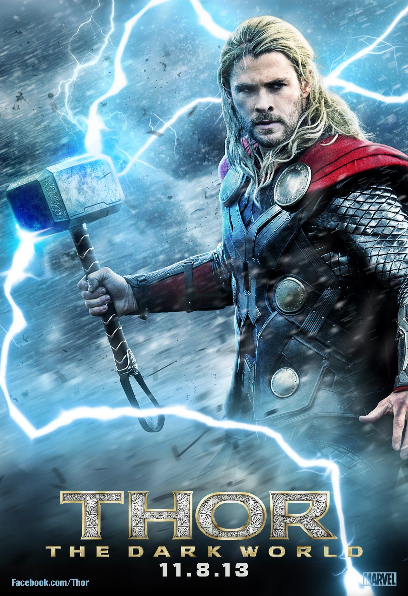

預告片
劇情簡介
 即將繼承王位的索爾，加冕儀式意外被寒冰巨人所破壞，導致儀式中止。 未能成功當上國王，難以抑制的怒火促使索爾向寒冰界發動戰爭，奧丁對索爾此無理之舉感到非常失望，將索爾驅逐阿斯嘉並對槌子下了魔咒：「無論是誰拿到這個錘子，只要他夠資格，就能繼承雷神索爾的能力」。
被驅逐至地球的索爾，受到許多地球人的幫助，尋找被奧丁一同丟進地球的雷神之槌。同時，洛基在阿斯嘉戰鬥中發現自己是寒冰巨人後裔，無法接受事實的洛基懷疑從小永遠比不過索爾是因為父母的偏見，但奧丁卻因爲承受的壓力過大而昏倒，導致洛基當上阿斯嘉國王而掌控一切。